Fichas para 7.º grado (1.º de ESO)
181 fichas en español para 7.º grado (1.º de ESO): PDF para imprimir, sin preparación y con solucionario – comprensión lectora y búsquedas del tesoro.
181 recursos
Por tema: Geografía · Animales y naturaleza · Ciencias y salud · Historia y sociedad · Cultura general · Búsquedas del tesoro · Fichas de lectura
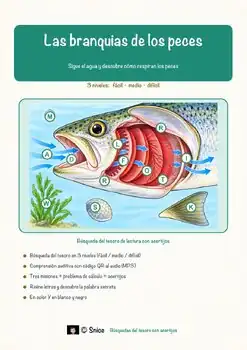
«Las branquias de los peces» – Búsqueda del tesoro de lectura

«Yo soy yo, autoestima y emociones» – Búsqueda del tesoro de lectura

«El secreto de la llama azul» – Búsqueda del tesoro de lectura

«La calefacción central» – Búsqueda del tesoro de lectura

«El laboratorio de pan de jengibre: Geometría entre moldes, medidas y casas» – Búsqueda del tesoro de lectura
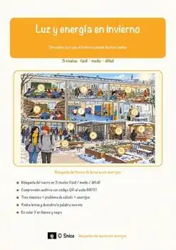
«Luz y energía en invierno» – Búsqueda del tesoro de lectura
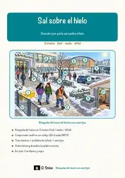
«Sal sobre el hielo» – Búsqueda del tesoro de lectura
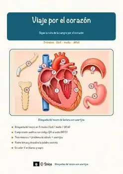
«Viaje por el corazón» – Búsqueda del tesoro de lectura
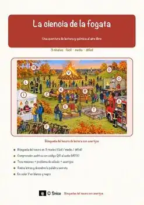
«La ciencia de la fogata» – Búsqueda del tesoro de lectura
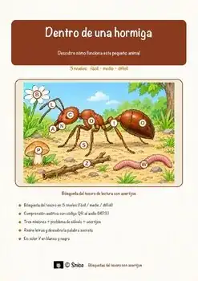
«Dentro de una hormiga» – Búsqueda del tesoro de lectura
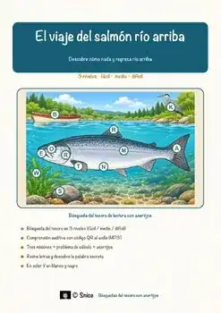
«El viaje del salmón río arriba» – Búsqueda del tesoro de lectura
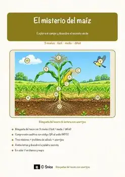
«El misterio del maíz» – Búsqueda del tesoro de lectura
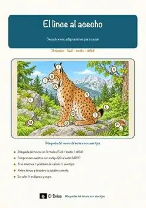
«El lince al acecho» – Búsqueda del tesoro de lectura
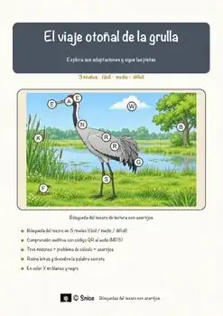
«El viaje otoñal de la grulla» – Búsqueda del tesoro de lectura
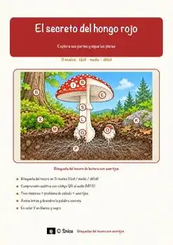
«El secreto del hongo rojo» – Búsqueda del tesoro de lectura
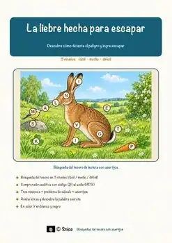
«La liebre hecha para escapar» – Búsqueda del tesoro de lectura
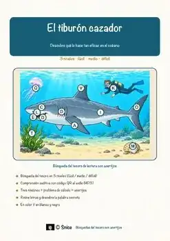
«El tiburón cazador» – Búsqueda del tesoro de lectura
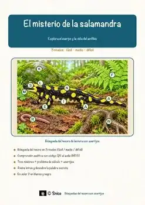
«El misterio de la salamandra» – Búsqueda del tesoro de lectura
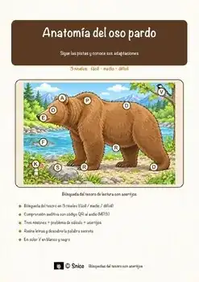
«Anatomía del oso pardo» – Búsqueda del tesoro de lectura
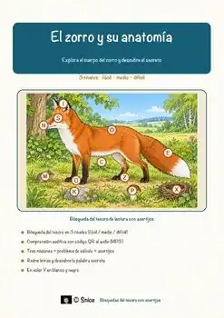
«El zorro y su anatomía» – Búsqueda del tesoro de lectura
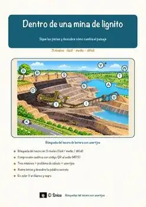
«Dentro de una mina de lignito» – Búsqueda del tesoro de lectura
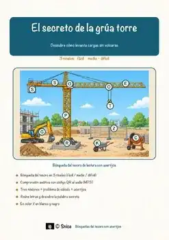
«El secreto de la grúa torre» – Búsqueda del tesoro de lectura
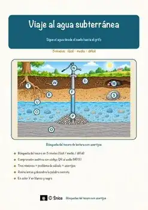
«Viaje al agua subterránea» – Búsqueda del tesoro de lectura
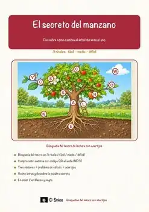
«El secreto del manzano» – Búsqueda del tesoro de lectura
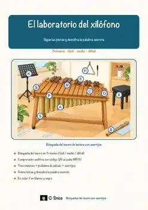
«El laboratorio del xilófono» – Búsqueda del tesoro de lectura
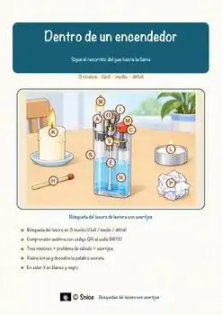
«Dentro de un encendedor» – Búsqueda del tesoro de lectura
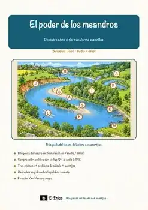
«El poder de los meandros» – Búsqueda del tesoro de lectura
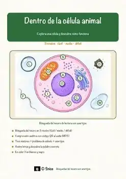
«Dentro de la célula animal» – Búsqueda del tesoro de lectura
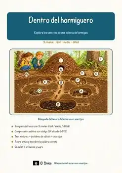
«Dentro del hormiguero» – Búsqueda del tesoro de lectura
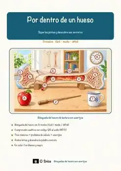
«Por dentro de un hueso» – Búsqueda del tesoro de lectura
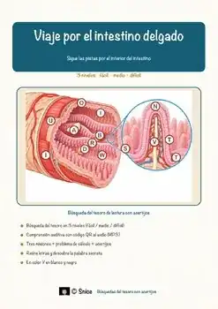
«Viaje por el intestino delgado» – Búsqueda del tesoro de lectura
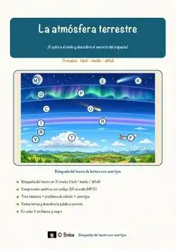
«La atmósfera terrestre» – Búsqueda del tesoro de lectura
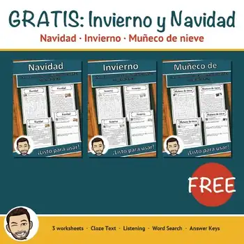
Invierno y Navidad – Comprensión lectora GRATIS | Spanish Reading Sampler
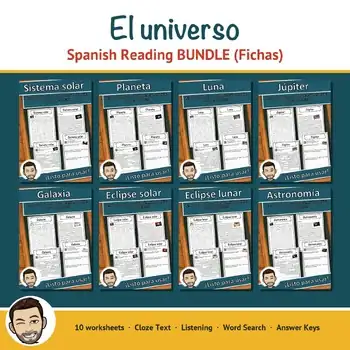
El universo – Spanish Reading Comprehension BUNDLE | Space Fichas
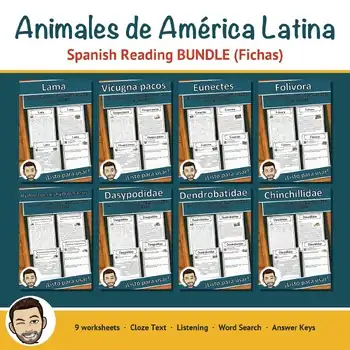
Animales de América Latina – Spanish Reading BUNDLE | Animal Fichas
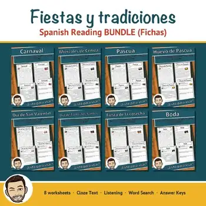
Fiestas y tradiciones – Spanish Reading BUNDLE | Carnaval, Pascua & More
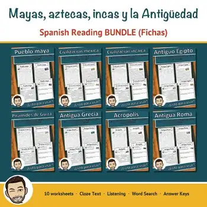
Mayas, aztecas e incas – Spanish Reading BUNDLE | Ancient Civilizations
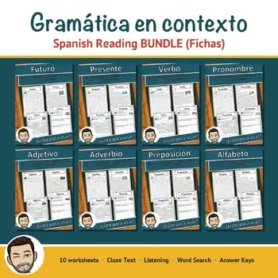
Gramática en contexto – Spanish Reading BUNDLE | Grammar Fichas
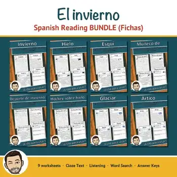
El invierno – Spanish Reading Comprehension BUNDLE | Winter Fichas
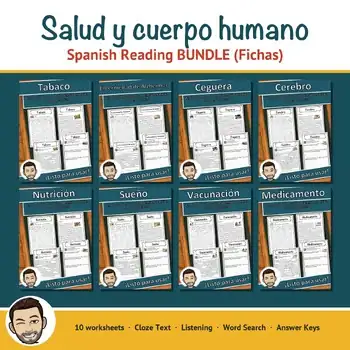
Salud y cuerpo humano – Spanish Reading BUNDLE | Health Fichas
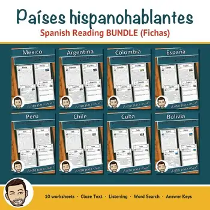
Países hispanohablantes – Spanish Reading BUNDLE | Spanish-Speaking Countries
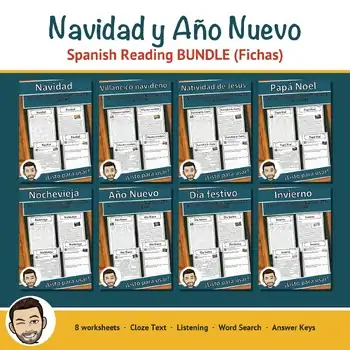
Navidad y Año Nuevo – Spanish Reading BUNDLE | Christmas & New Year Fichas

Trojanisches Pferd – Ficha de lectura: texto con huecos, comprensión auditiva y sopa de letras

Torre de televisión de Berlín – Ficha de lectura: texto con huecos, comprensión auditiva y sopa de letras

Streik – Ficha de lectura: texto con huecos, comprensión auditiva y sopa de letras

Sozialdemokratie – Ficha de lectura: texto con huecos, comprensión auditiva y sopa de letras

Peter Tschaikowski – Ficha de lectura: texto con huecos, comprensión auditiva y sopa de letras

Pest – Ficha de lectura: texto con huecos, comprensión auditiva y sopa de letras
No se encontraron recursos. Prueba con otra palabra o con otro filtro.